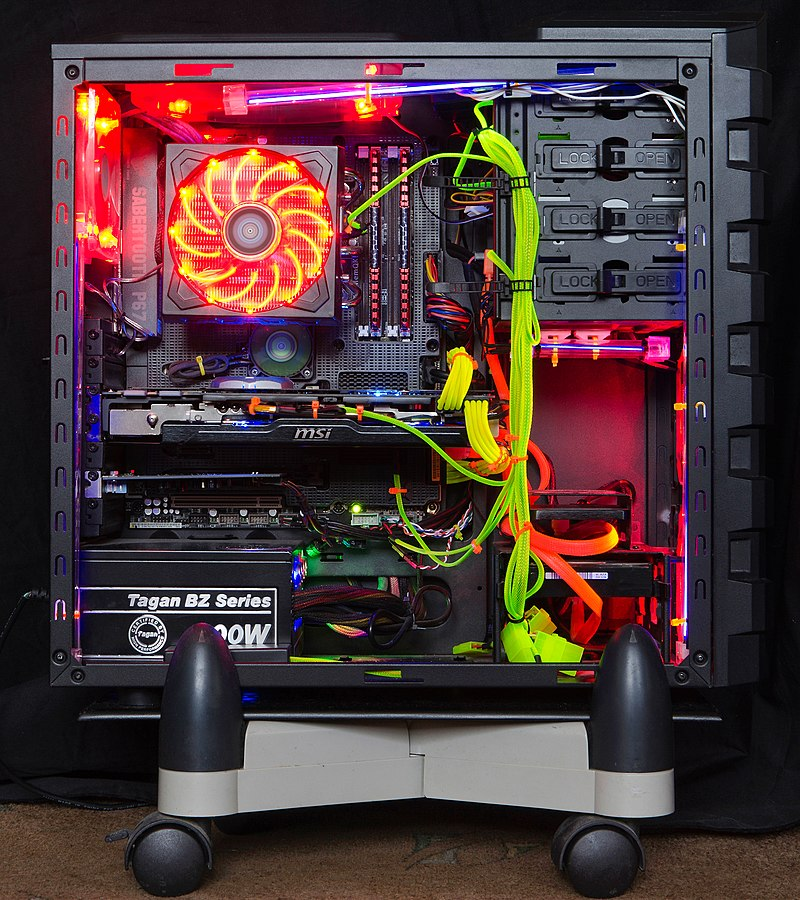

KOMPUTER
Co to w ogóle jest ?| Komputer (od ang. computer) to dawniej: mózg elektronowy, elektroniczna maszyna cyfrowa, maszyna matematyczna – maszyna przeznaczona do przetwarzania informacji, które da się zapisać w formie ciągu cyfr albo sygnału ciągłego. Maszyna roku tygodnika „Time” w 1982 roku. Mimo że mechaniczne maszyny liczące istniały od wielu stuleci, komputery w sensie współczesnym pojawiły się dopiero w połowie XX wieku, gdy zbudowano pierwsze komputery elektroniczne. Miały one rozmiary sporych pomieszczeń i zużywały kilkaset razy więcej energii niż współczesne komputery osobiste (PC), a jednocześnie miały miliardy razy mniejszą moc obliczeniową. Współcześnie są prowadzone także badania nad komputerami biologicznymi i optycznymi. Małe komputery mogą zmieścić się nawet w zegarku i są zasilane baterią. Komputery osobiste stały się symbolem ery informatycznej. Najliczniejszymi maszynami liczącymi są systemy wbudowane sterujące najróżniejszymi urządzeniami – od odtwarzaczy MP3 i zabawek po roboty przemysłowe.
zrodło: https://pl.wikipedia.org/wiki/Komputer
- W której skład wchodzą:
- Do czego dochodzą akcesoria pomagające/umożliwiające pracę z komputerem**:
* - nie wymagane ale zalecane
** - nie wymagane ale umorzliwiają korzystanie z komputera w przyjemny i łatwy sposób (najlepsze do użydku domowego)